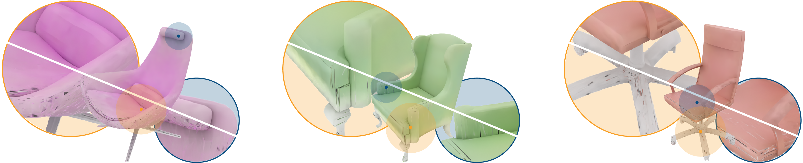

Seams, distortions, wasted UV space, vertex-duplication, and varying resolution over the surface are the most prominent issues of the standard UV-based texturing of meshes. These issues are particularly acute when automatic UV-unwrapping techniques are used. For this reason, instead of generating textures in automatically generated UV-planes like most state-of-the-art methods, we propose to represent textures as coloured point-clouds whose colours are generated by a denoising diffusion probabilistic model constrained to operate on the surface of 3D objects. Our sampling and resolution agnostic generative model heavily relies on heat diffusion over the surface of the meshes for spatial communication between points. To enable processing of arbitrarily sampled point-cloud textures and ensure long-distance texture consistency we introduce a fast re-sampling of the mesh spectral properties used during the heat diffusion and introduce a novel heat-diffusion-based self-attention mechanism.
While most state-of-the-art methods focus on generating textures in UV-space and thus inherit all the drawbacks of UV-mapping, we propose to represent textures with unstructured point-clouds sampled on the surface of an object and devise a technique to render them without going through UV-mapping.
UV3-TeD generates point-cloud textures with a denoising diffusion probabilistic model operating exclusively on the surface of the meshes thanks to heat-diffusion-based operators specifically designed to operate on the surface of the input shapes.
These Attention-enhanced Heat Diffusion operators are at the core of UV3-TeD and are made of three consecutive Diffusion blocks (bottom) inspired by Sharp et al. (2020) and conditioned with a denoising time embedding as well as a diffused farthest-sampled attention layer (top). The proposed attention, conditioned with local and global shape embeddings, first spreads information to all the points on the surface, then computes a multi-headed self-attention on the features of the farthest samples (red points), and finally spreads them back to all the points with another heat diffusion.
The point-cloud textures generated by UV3-TeD can be physically rendered by interpolating the colours of the three nearest texture points to the ray-mesh intersection. Directly rendering point-cloud textures (top-right halves) produce significantly better results than when projected on automatically wrapped UV-textures (bottom-left halves).
@article{foti2024uv3ted,
title={UV-free Texture Generation with Denoising and Geodesic Heat Diffusions},
author={Foti, Simone and Zafeiriou, Stefanos and Birdal, Tolga},
journal={arXiv preprint arXiv:2408.16762},
year={2024}
}